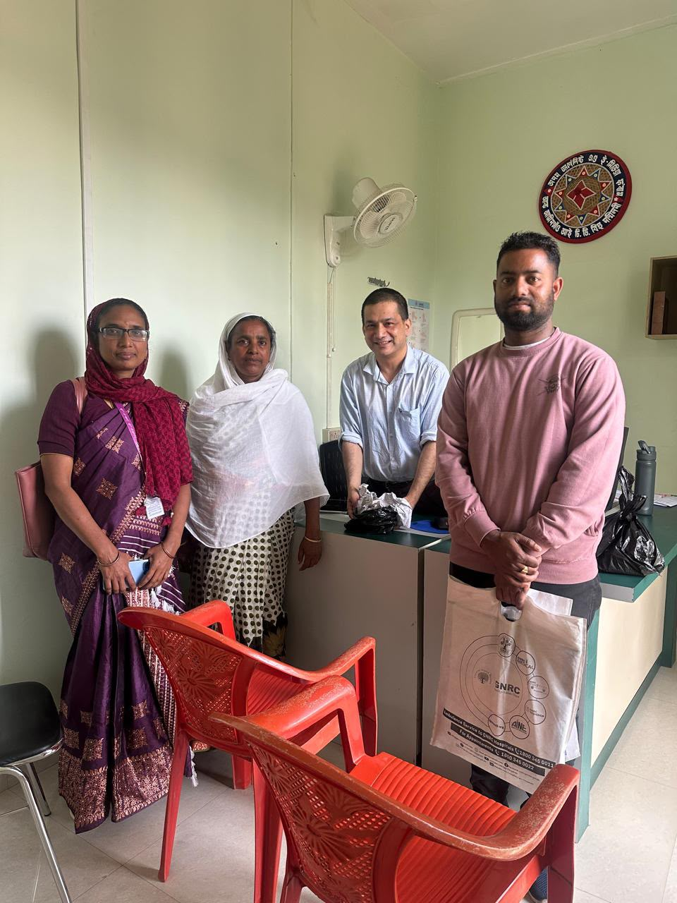
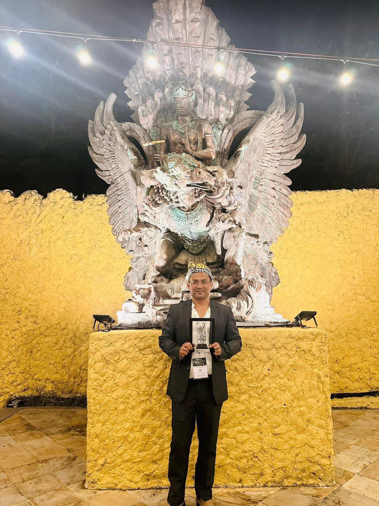
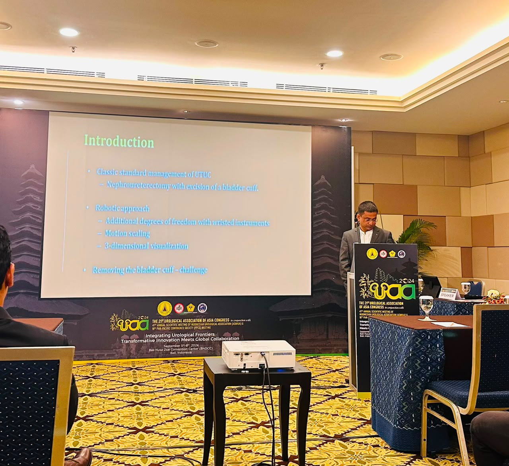
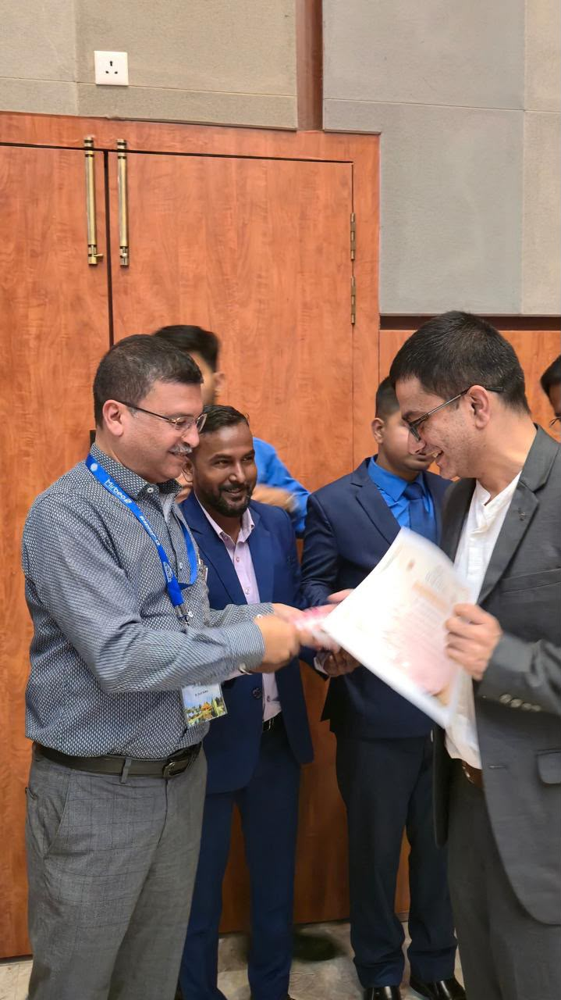
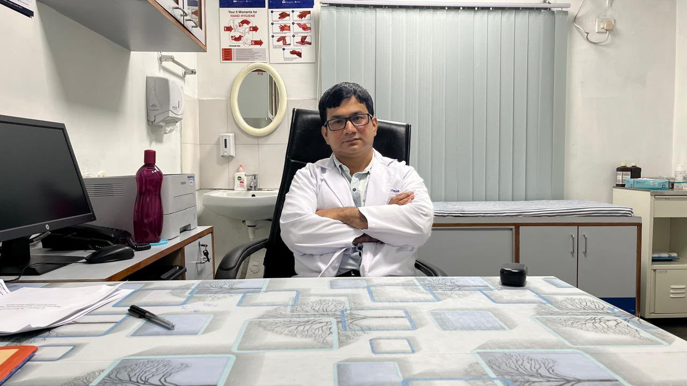

Featured Story 01▶
Advanced Urology Care · Bongaigaon, Assam
Senior Consultant Urologist in Bongaigaon — Dr. Tikenjit Mazumdar
Global-standard urology care with focused expertise in robotic urology, uro-oncology and reconstructive urology at Lower Assam Hospital & Research Centre.
23+Years of practice
3Languages + Bengali/Assamese/Hindi/English
UrologySenior Consultant


Dr. Tikenjit MazumdarSenior Consultant Urology · Lower Assam Hospital & Research Centre
Scroll to explore
Specialized Care
Focused urology expertise, built around the patient.
Specialized services can be presented clearly so patients understand where to seek consultation.
◈
Robotic Urology
Special interest and expertise in robotic urology and advanced surgical practice.
✚
Uro-Oncology
Specialized urological cancer care and evaluation within the doctor's uro-oncology practice.

⌁
Reconstructive Urology
Focused reconstructive urology expertise for patients requiring specialized evaluation.
23+Years practicing urology
2008MBBS graduation
2014Postgraduate studies
19629Professional registration no.
Professional Profile
A global-standard approach to urology care.
“Global standard in urology care.”Dr. Tikenjit Mazumdar · Senior Consultant Urology
About the Doctor
Experience across leading hospital settings.
Dr. Tikenjit Mazumdar is a Senior Consultant Urology at Lower Assam Hospital & Research Centre, Bongaigaon. His profile lists previous consultant roles at Apollo Hospital, Narayana Hospital and GNRC Hospital.
- MBBS from AMC Dibrugarh, Dibrugarh University
- Postgraduate studies at Guwahati Medical College
- Major expertise in robotic urology, uro-oncology and reconstruction
- Languages: Assamese, English, Hindi and Bengali
- Teaching, training and professional conference presentation experience
Patient Journey
A simple path from consultation to care.
01 · CONSULT
Discuss your concern
Bring your symptoms, previous reports and relevant medical history.
02 · EVALUATE
Clinical assessment
The consultation duration and investigations depend on the individual condition.
03 · PLAN
Personalized treatment plan
Treatment options are discussed according to clinical requirements.
04 · FOLLOW UP
Continued care
Follow-up consultations may be recommended when clinically appropriate.
Appointment Information
Plan your visit with confidence.
Consultation timings will be published here once the doctor or hospital confirms the schedule. Until then, patients can call the appointment numbers to confirm availability.
Doctor Timing
Hospital consultation schedule
Monday – SaturdayConfirm by phone
SundayConfirm by phone
Emergency / urgent careContact hospital
No consultation hours were provided in the supplied doctor profile, so no unverified timing is displayed.
Clinic & Care
A closer look at the care experience.
Use this space for the doctor's introduction video, hospital walkthrough, procedure education or clinic presentation.
✓ Advanced urology focus✓ Patient-first consultation✓ Bongaigaon, Assam
VIDEOAdd the supplied video to /videos/doctor-urology-procedure.mp4
How It Works
Your path to specialist urology care.
01
Request an appointment
Call the appointment number or use the contact page to begin.
02
Consultation & evaluation
Discuss symptoms, history and relevant reports with the doctor.
03
Care plan
Treatment options are considered according to the clinical assessment.
Care Environment
A modern visual experience for a modern urology practice.
Photographs supplied for this project are used throughout the experience, including doctor, procedure, event and patient-care imagery.
Doctor ProfileRobotic UrologySurgical CareProfessional Development
Patient Care
Medical Team
Recognition
Medical EventsCommon Questions
Helpful information before your visit.
When should I consult a urologist?
You may consult for urological conditions requiring specialized evaluation, including concerns related to uro-oncology, reconstructive urology, robotic urology and general urological care.
Do I need an appointment?
Yes. Patients are recommended to schedule an appointment before visiting to ensure appropriate consultation availability.
What should I bring?
Bring previous medical reports, diagnostic test results, scans, prescriptions, medication details and relevant treatment records, if available.
Do you provide online consultations?
Online consultation availability has not been specified in the supplied profile and should be confirmed with the hospital or doctor before publishing a definite claim.
Looking for urology consultation in Bongaigaon?
Schedule an appointment with Dr. Tikenjit Mazumdar at Lower Assam Hospital & Research Centre.
Advanced Urology Care
Specialist care backed by experience, technology and a patient-first approach.
Dr. Tikenjit Mazumdar focuses on robotic urology, uro-oncology, reconstructive urology and comprehensive urological evaluation.
✦
Robotic Urology
Special interest in robotic urology and advanced surgical practice.
＋
Uro-Oncology
Specialized evaluation and care for urological cancer-related concerns.
◌
Reconstructive Urology
Focused reconstructive expertise for complex urological needs.
For Patients
Clear information before your visit
Bring previous reports, scans, prescriptions, medication details and relevant treatment records when available.
Languages
Communication that feels comfortable
AssameseEnglishHindiBengali
Location
Lower Assam Hospital & Research Centre
Bongaigaon, Assam. Use the appointment page for contact and location information.
Urology Expertise
Specialist care across the conditions that matter most.
Explore the core areas of Dr. Tikenjit Mazumdar’s urology practice, from robotic urology and uro-oncology to reconstructive care and general urological evaluation.
Robotic UrologyAdvanced minimally invasive surgical practice and robotic urology expertise.
Uro-OncologySpecialized evaluation and treatment planning for urological cancer concerns.
Reconstructive UrologyFocused care for patients requiring reconstructive urological assessment.
Kidney & Urinary CareAssessment of urinary symptoms, stones, infections and related concerns.
Advanced Urology Care
Technology, experience and a human approach.
Dr. Tikenjit Mazumdar’s profile highlights robotic urology, uro-oncology and reconstructive urology as major areas of expertise, with a patient-focused approach to specialist care.

Meet Your Urologist
23 years of urology practice, presented with clarity.
Dr. Tikenjit Mazumdar is a Senior Consultant Urology at Lower Assam Hospital & Research Centre, Bongaigaon. His profile includes previous consultant roles at Apollo Hospital, Narayana Hospital and GNRC Hospital.
He completed MBBS at AMC Dibrugarh and postgraduate studies at Guwahati Medical College, with special interests in robotic urology and reconstruction.
View Doctor Profile →Professional Journey
Experience that supports a more informed consultation.
From postgraduate training to consultant roles and professional conference participation, the website brings the doctor’s documented professional journey into one clear patient-friendly experience.
Explore Experience →23+Years of practice listed in the supplied profile.
3+Major hospital consultant experiences listed in the profile.
4Languages: Assamese, English, Hindi and Bengali.
Patient Journey
From first concern to continued follow-up.
A clear consultation journey helps patients understand what to prepare, what to discuss and how follow-up may fit into their care plan.
Patient Education
Useful answers before you visit.
Our Insights section provides practical, easy-to-read information around common urology questions and preparation for consultation.
?
When should you see a urologist?
Understand when persistent urinary or reproductive-system symptoms may warrant specialist assessment.
Read the guide →+
How to prepare for consultation
Learn what reports, scans, prescriptions and medical history can be useful to bring.
Read the guide →◈
Understanding robotic urology
A patient-friendly introduction to robotic urology and why specialist evaluation matters.
Read the guide →Lower Assam Hospital & Research Centre
Specialist urology care in Bongaigaon, Assam.
Use the appointment page to find the available contact options, location information and the Google Sheets appointment request form.